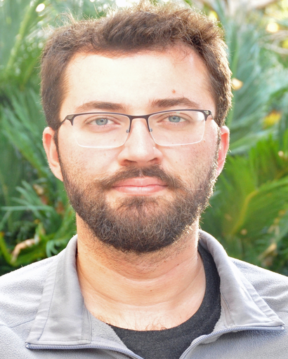

The DINGO Lab at the University of Melbourne works on decision making under uncertainty, game theory, trusted autonomous systems, optimisation, and networked control and estimation.

I am a Professor of Systems Engineering in the Department of Electrical and Electronic Engineering at the University of Melbourne. Before this, I served as Professor of Mechatronics Engineering in the School of Engineering at the Australian National University from 2021 to 2025. Between 2019 and 2021, I was an Associate Professor in the Department of Electrical and Electronic Engineering at the University of Melbourne, where I also worked as a Senior Lecturer and McKenzie Fellow from 2012 to 2017. From 2011 to 2012, I was a Postdoctoral Researcher at the ACCESS Linnaeus Centre, KTH Royal Institute of Technology.
I earned my Ph.D. in Engineering and Computer Science from the Australian National University in 2011, after completing a B.Sc. in Electrical and Electronics Engineering at Shiraz University in 2006. I am always looking for strong students with backgrounds in electrical engineering, computer science, applied mathematics, or mechanical engineering — particularly those with solid foundations in numerical methods, differential equations, control theory, and optimisation.